OpenCAGE's Mod Manager installs mods for Alien: Isolation. You don't need to know anything about modding to use it: add the mods you've downloaded, tick the ones you want, and click Apply.
You can install as many mods as you like at the same time - including several that change the same level or the same game settings. The Mod Manager combines them for you, and tells you if two of them want different things. You can turn any mod off again later, and turning all of them off gives you back exactly the game you started with.
Mods come as files ending in .omp (an OpenCAGE Mod Package). Each one is a single file, however much it changes.
Before you start: close Alien: Isolation whenever you install or remove mods. The game keeps its files open while it runs, so the Mod Manager can't change them until it's closed.
Want to make your own mods? See Making Mods.
Open OpenCAGE, then click Mod Manager on the toolbar at the top of the window. You don't need to open a level first.
Each time it opens, the Mod Manager checks your game files. This takes a moment the first time, and the line at the top tells you when it's done. With no mods added yet, it looks like this:
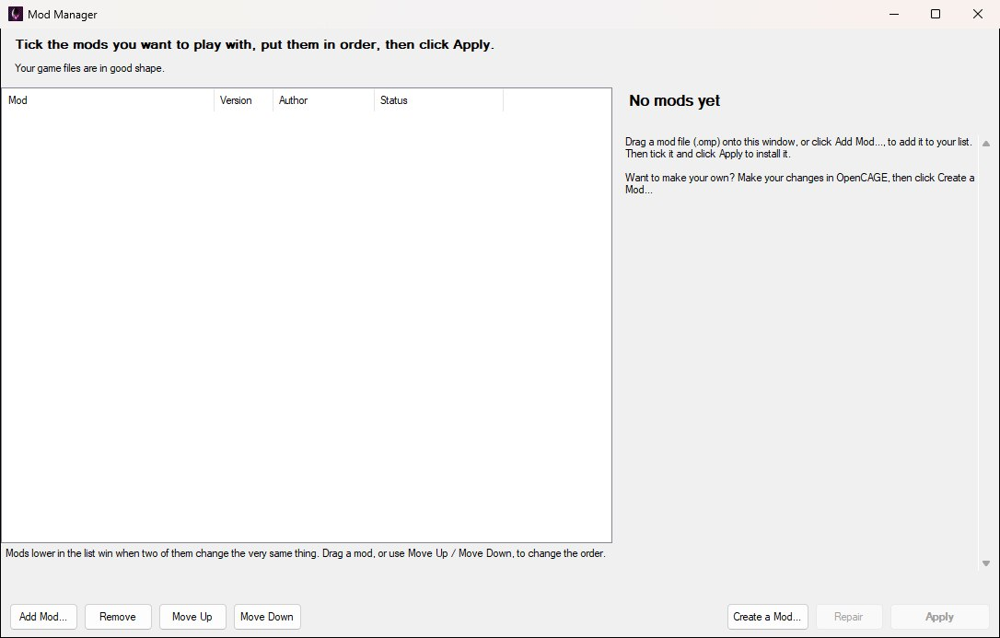
There are three ways to add a mod to your list. Use whichever is easiest:
Adding a mod doesn't change your game yet: it goes into your list unticked. The Mod Manager keeps its own copy, so you can delete the file you downloaded afterwards.
Click a mod in the list to see its picture, who made it, its description, and what it changes:
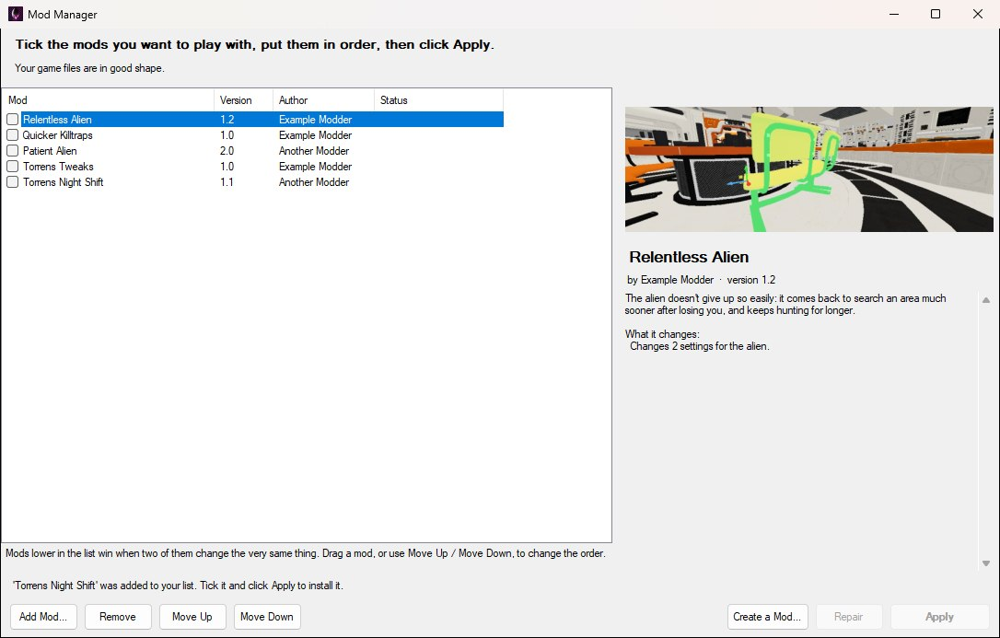
Tick the box beside each mod you want to play with. Its status changes to Will be installed - nothing happens to your game until you click Apply, so you can tick and untick as much as you like first.
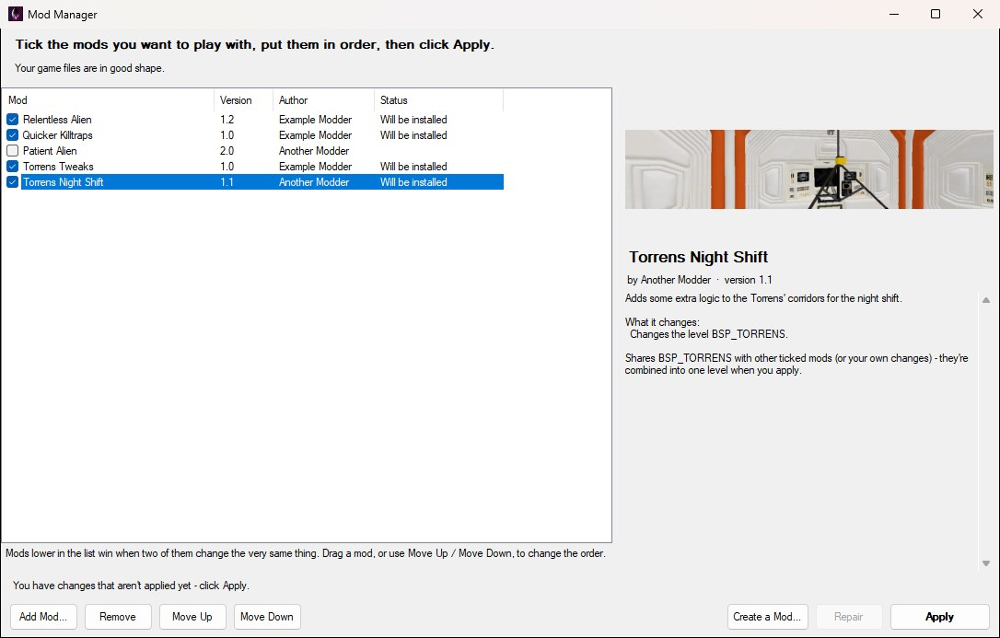
When you're ready, click Apply. If anything is worth knowing first, the Mod Manager tells you before it changes anything. For example, it lists any level that more than one of your mods changes - those are put back together with every mod's changes in them, which takes a minute or so each - and anything two of your mods both want to change:
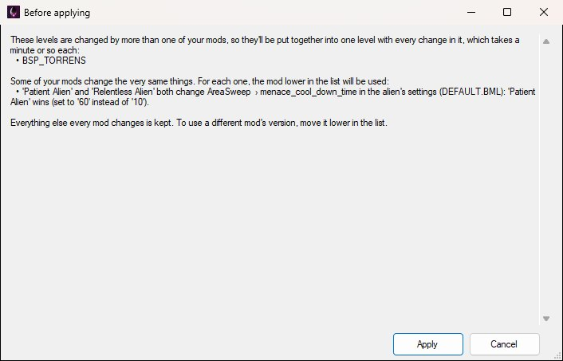
Click Apply to go ahead, or Cancel to change your mind. While the mods go in, a small window shows what's happening:
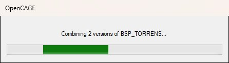
When it's done, you'll see a summary of what was combined and which version was used wherever two mods clashed:
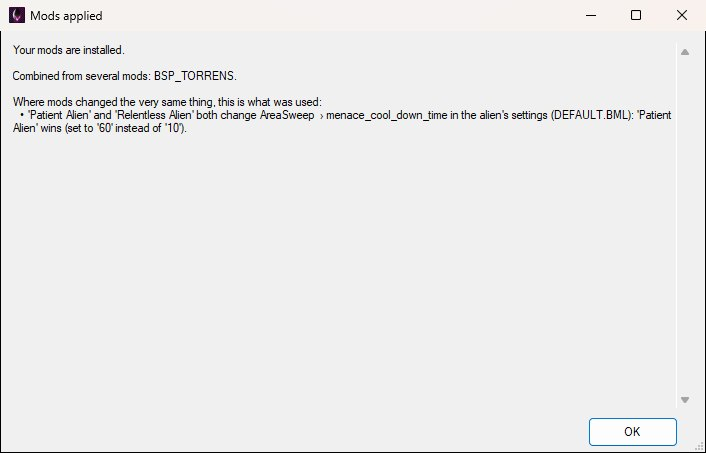
Your mods now show Installed. Start the game as you normally would and they'll be there.
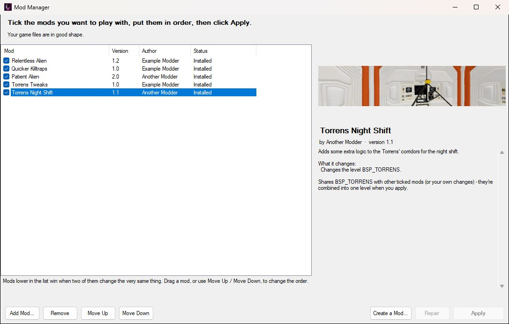
If something goes wrong part-way - a file is in use, say - nothing is changed: the Mod Manager puts everything back as it was and tells you why it stopped.
The order of your list only matters when two mods change the very same thing - the same setting, the same line of text, or the same part of a level. When that happens, the mod lower in the list wins.
To change the order, drag a mod up or down the list, or select it and click Move Up or Move Down. The new order takes effect the next time you click Apply.
Most mods work together without you having to do anything. The Mod Manager looks inside the files mods change and keeps every change from every mod - so two mods that change different settings in the same file both work, two mods that change different text both work, and two mods that change the same level are combined into one level with both mods' changes in it.
A clash only happens when two mods change exactly the same thing. Click a ticked mod to see whether it clashes with any of the others:
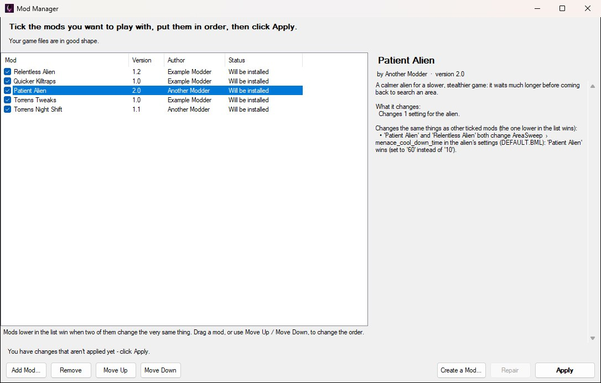
Everything else both mods change is still kept. If you'd rather have the other mod's version of the clashing setting, move that mod lower in the list and click Apply again.
To take a mod out of your game, untick it. Its status changes to Will be removed; click Apply to remove it. Your other mods stay installed, exactly as if the one you removed had never been there.
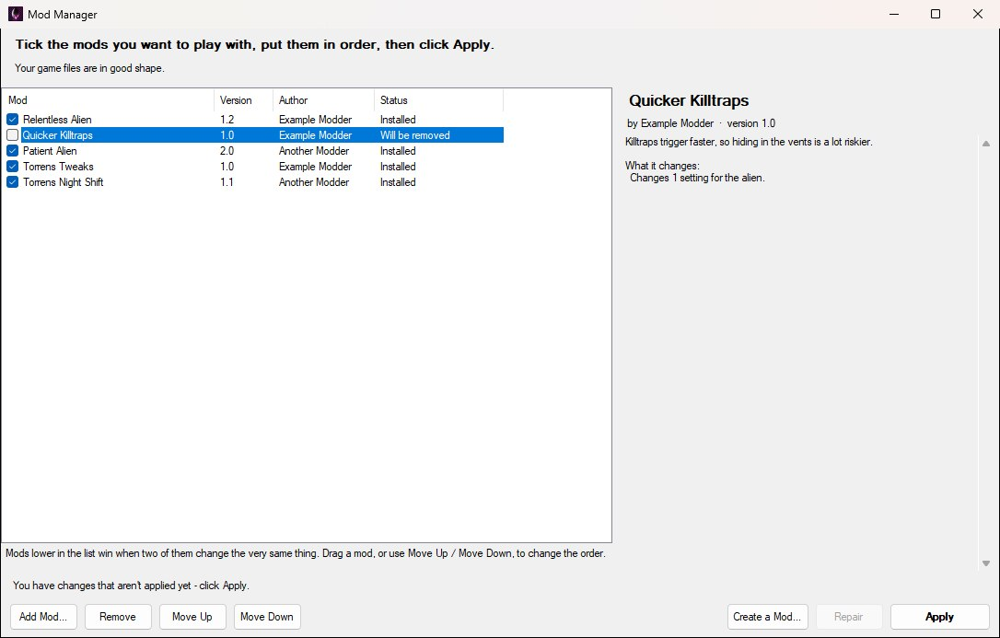
Untick every mod and click Apply to go back to the game you started with.
A mod you've turned off stays in your list, so you can turn it back on whenever you like. To take it off the list completely, select it and click Remove (you'll need the .omp file again to add it back). A mod has to be turned off before it can be removed.
Got a new version of a mod you already have? Add it the same way as before. It replaces the old version in your list, in the same place and still ticked if it was. If the old version was installed, click Apply to swap in the new one.
If you also change the game yourself with OpenCAGE - editing a level's scripts, say, or a setting - the Mod Manager looks after those changes too. Mods are combined with your changes rather than replacing them, and turning mods off gives you your changes back. The top of the Mod Manager tells you when you've changed files yourself:
Where a mod changes the very same thing you did, the mod's version is used while it's installed. Turn the mod off and yours comes back.
If you change something a mod installed - for example, you edit a level after installing a mod for it - and then click Apply, the Mod Manager won't just overwrite your work. It asks what you'd like to do:
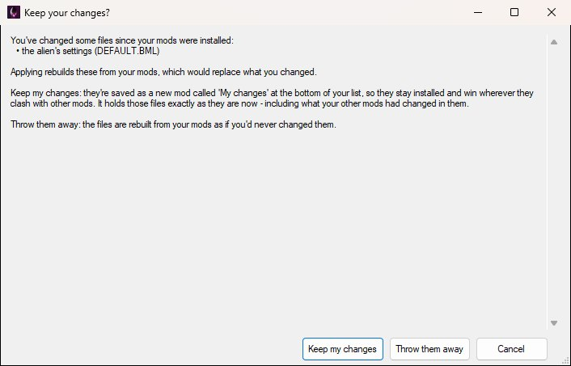
OpenCAGE keeps a copy of the original version of a game file before it first changes it, so it can always combine mods with your changes and put things back. Files changed before that - by an older version of OpenCAGE, or by a mod installed by hand - have no original copy. When that's the case, the top of the Mod Manager says so, with a Keep those changes safe... link:
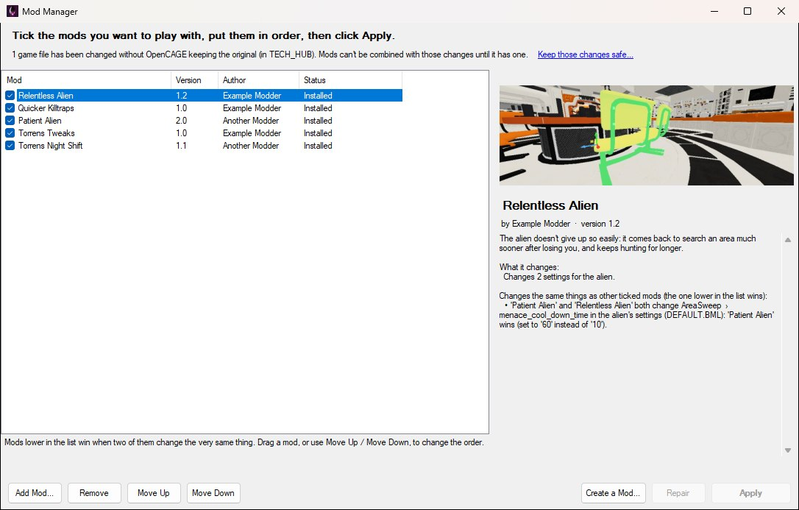
Click it to fix that in a few minutes. OpenCAGE copies your files, asks you to have Steam check the game's files (which puts the original versions back), keeps copies of those originals, then puts your files straight back. Your game ends up exactly as it was, and nothing is lost.
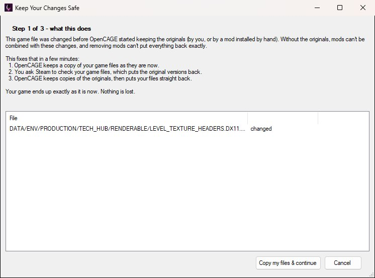
Until you do, a mod that changes the same level as those files can't be combined with them, and the Mod Manager will tell you that when you click Apply.
Steam sometimes puts the game's original files back - after a game update, or when you use Verify integrity of game files. If that happens to files your mods changed, those mods show Needs repair. Click Repair and the Mod Manager puts your mods back in.
Can I use two mods that change the same level?
Yes. The level is rebuilt with both mods' changes in it. Where they both change the very same thing, the mod lower in your list is used, and the Mod Manager tells you.
Applying stopped with a message. Is my game broken?
No. If anything goes wrong while mods go in, the Mod Manager puts every file back the way it was before you clicked Apply, then tells you what went wrong. The most common reason is the game still running.
OpenCAGE closed (or my PC turned off) while mods were going in.
The next time you open the Mod Manager, it puts your game files back the way they were before that started. Then just click Apply again.
It says to restart OpenCAGE before working on animations.
OpenCAGE reads the game's animations when it starts, and your mods have just changed them. The animation editors would still show (and save) the old ones, so they won't save until you restart OpenCAGE.
It says a mod was made for a different version of the game.
Mods are made for one version of the game. Mods for the PC version work with Steam, Epic Games Store and GOG copies alike, but they can't be installed on other versions (such as the Nintendo Switch version), and those versions' mods can't be installed on PC.
Does removing a mod really undo everything it changed?
Yes. Every file is put back exactly as it was, byte for byte.
Where does the Mod Manager keep my mods?
Inside your game folder, in DATA/MODTOOLS/MODS, along with the copies of original files it keeps. Don't change anything in there by hand.
Why does applying take longer for some mods?
A level that more than one of your mods changes (or that you've changed yourself as well) is put back together from all of them, which takes a minute or so per level - longer when one of those mods rebuilt the level's lighting and navigation, as the combined level then has to be rebuilt too. Everything else goes in within seconds. A level is only put back together when something about it has changed: turning other mods on or off leaves it alone.